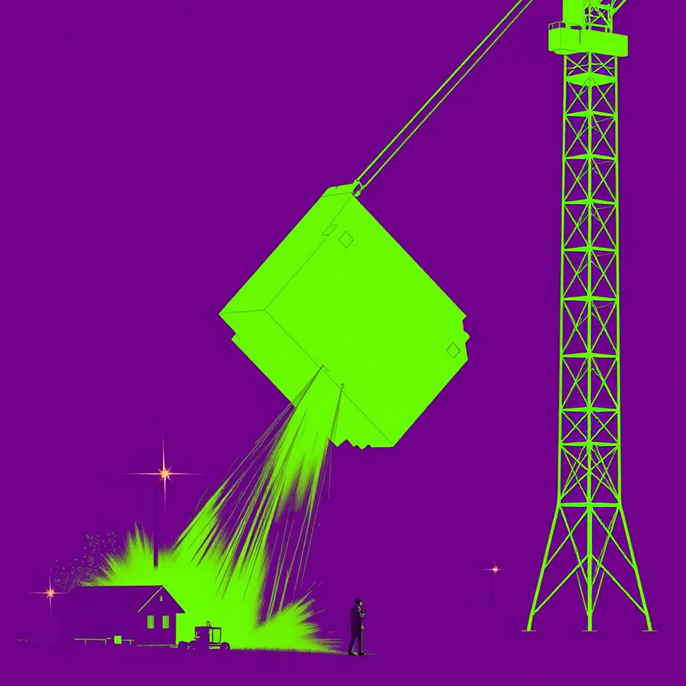

First Light ·
a 3D printer's first layer rising off the bed, a tower crane lifting the last section as the tower rises into the morning
The nozzle hums a low electric whine. A flat circle of melted plastic spreads upon the cold glass plate, then pulls itself upward into a wobbly cylinder, layer after sticky layer stacking on the previous one. It swells slightly as the material cools and shrinks, holding its shape while the extruder head moves to the left.
Across the river, the tower crane jerks once against the wind, lifting the final steel box toward the clouds. The structure climbs behind it like a tree bending under weight, until the frame fills with iron ribs and cables taut as wire. A single bolt spins in the gear house above, and the concrete core pushes higher into the clear night sky.
Back to the bench where the filament runs out of plastic spool. The print head pauses over the last ring of gray plastic, still pushing upward while the motor clicks its final step. The new layer drags across the surface leaving a faint oil stain, the only mark the giant event left on this small machine. The nozzle lifts again, ready for whatever comes next.
How this piece was made
- 01Poem written byQwen3.5 9B recorded
Local model on one RTX 3070 Ti. It also critiques its own drafts and rewrites up to five times.
- 02Image prompt written byQwen3 8B from pipeline history
Local model. It reads the poem and writes the picture brief.
- 03Image rendered byFLUX.1 [schnell] from pipeline history
Local diffusion model on the same GPU. Several candidates per poem.
- 04Image chosen byClaude Fable 5.1 from pipeline history
Claude, running as the corporation's blind art-critic. It scores every candidate and never writes a prompt.
- Poem drafts
- 5 of 5
- Poem self-score
- 6/10
- Image candidates
- 4
- Judge’s score
- 4/10
- Selection
- Highest-scoring on-subject candidate (did not clear the judge’s bar outright)